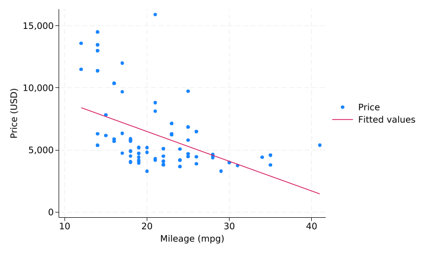

This document was written in Markdown and turned into a Word document by Stata’s dyndoc command. Every number below is computed by Stata when the document is created. Nothing is typed by hand.
We use the 1978 automobile data that ships with Stata. The data contain 74 cars, and the average price is 6,165 dollars.
. regress price mpg weight
Source | SS df MS Number of obs = 74
-------------+---------------------------------- F(2, 71) = 14.74
Model | 186321280 2 93160639.9 Prob > F = 0.0000
Residual | 448744116 71 6320339.67 R-squared = 0.2934
-------------+---------------------------------- Adj R-squared = 0.2735
Total | 635065396 73 8699525.97 Root MSE = 2514
------------------------------------------------------------------------------
price | Coefficient Std. err. t P>|t| [95% conf. interval]
-------------+----------------------------------------------------------------
mpg | -49.51222 86.15604 -0.57 0.567 -221.3025 122.278
weight | 1.746559 .6413538 2.72 0.008 .467736 3.025382
_cons | 1946.069 3597.05 0.54 0.590 -5226.245 9118.382
------------------------------------------------------------------------------
Holding weight constant, one more mile per gallon changes the price by -49.5 dollars.
